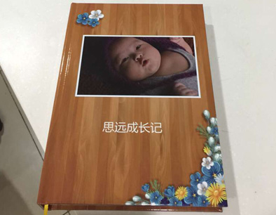

从呱呱落地到学爬学走到独立上学，孩子的每个瞬间、时间都值得记住，记录她的成长点滴也记录为人父母的心情感慨。
爸爸为宝宝拍了很多照片，各个月龄段的模样，百天、周岁生日纪念的，各地旅游的，等等等等，数量庞大但杂乱。
在忆尔上制作亲子纪念册，可以按宝宝的成长过程编排册子，这样把我们照片能进行有序整理，能明显看到宝宝各个时期的成长变化，又可以着重突出特别的时刻——生日、旅行等。
做了本纪念册，既记录了宝宝的成长，又把抚养过程回忆了遍，还把照片有效整理了，真是一举多得。
拿到册子的时候，真是倍感温馨，点点滴滴都浓缩在册子上了，亲朋好友来家做客时也方便给他们翻阅。将来等孩子长大，这些都是她不记得的记忆。